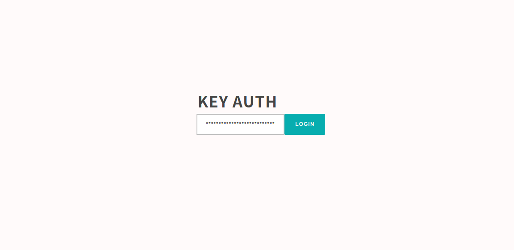

Quick start
You can generate DataBox and Base WEB APP in few steps. then you could start to push datas to flat databox freely and analyze datas easily. this is a quick start guide for ubuntu&apache2
Setup Env@ubuntu
# addd user
sudo useradd -s /sbin/nologin small-shell
# update apt list
sudo apt-get update
# install httpd (e.g. apache)
sudo apt-get install apache2
sudo a2enmod cgid
#sudo systemctl start apache2
sudo service apache2 start
sudo update-rc.d apache2 defaults
# install php library, it will be used for url encoding (required)
sudo apt-get install php
##install jq
#sudo apt-get install jq
sudo curl -o /usr/bin/jq -L https://github.com/stedolan/jq/releases/download/jq-1.6/jq-linux64 && sudo chmod +x /usr/bin/jq
Installation
# install
cd /usr/local
sudo git clone https://github.com/small-shell/small-shell.git
sudo chown -R small-shell:small-shell /usr/local/small-shell
Sudo setting
# set favorite editor
sudo update-alternatives --config editor
# change sudo setting
sudo visudo
## add to last line
## sudo setting for httpd user (e.g.) www-data for apache2
www-data ALL=(small-shell) NOPASSWD: /usr/local/small-shell/bin/*, /usr/local/small-shell/sbin/*
Gen Databox
Then Let's generate databox as the data store of WEB APP
DATA shell details are in DATA shell tour
sudo /usr/local/small-shell/adm/gen -databox
#-> dialog will be started
Note
You can exit dialog anytime with ctrl + C
Dialog
In this dialog, primary_key will be item_name. If so, dedicated item name can be used only 1 time. for example, if you use apple as item name, apple must be used only 1 dataset(record). other dataset could not use name "apple" as item name. then databox could be normalized. If you want to disable this restriction, please use hashid as primary_key in the dialog. detail are in APP shell tour
databox_name: item.db
primary_key(col1): item_name
primary_key label: Item Name
Do you want to add column to dataset ? (yes | no): yes
key(col2) name: description
key(col2) label: Description
data type (text | select | radio | checkbox | email | num | tel | date | date-time | url | textarea | file | pdls | mls): text
required to input each time? (yes | no): yes
Do you want to add more column to dataset ? (yes | no) : no
Data box will be generated by following order, please check it
-----------------------------------------------------------------
databox_name:item.db
#primary_key
name="item_name"
label="Item Name"
type="text"
option="required"
#column2
name="description"
label="Description"
type="text"
option="required"
-----------------------------------------------------------------
Is it OK ? (yes | no): yes
Gen Base APP
Once at least 1 databox is ready, please generate APP shell
APP shell details are in APP shell tour
sudo /usr/local/small-shell/adm/gen -app
Type of APP (1.BASE | 2.FORM | 3.SCRATCH): 1
#-> Dialog will be started, for making Base APP
# Dialog result
--------------------------------------------------------------------------
APP type: 1.BASE
protocol: https
APP exec user: www-data
Root directory: /var/www
CGI directory: /usr/lib/cgi-bin
server: ec2-XX-XX-XX-XX.us-west-2.compute.XXXX.com
base url: https://ec2-XX-XX-XX-XX.us-west-2.compute.XXXX.com/cgi-bin/
--------------------------------------------------------------------------
Add symlink on ubuntu
If you are using ubuntu and apache2, please add symlink by answering "yes" in the dialog.
www dir must have relation with CGI dir. Is it OK to make symbolic link on /usr/lib ?
following command will be executed
-----------------------------------------------------------------
ln -s /var/www/bin /usr/lib/bin
ln -s /var/www/descriptor /usr/lib/descriptor
ln -s /var/www/tmp /usr/lib/tmp
-----------------------------------------------------------------
(yes | no): yes
Add user
Following example is adding user name "test", "test" can initialize and get base64 key by accessing the URL that is generated by ops command
sudo /usr/local/small-shell/adm/ops add.usr:test
Initialize url for test on Base APP is created, please share this url to end user to generate access key to the APP
https://ec2-XX-XX-XX-XX.us-west-2.compute.XXXX.com/cgi-bin/shell.auth?initialize=634b027b1b69e1242d40d53e312b3b4ac7710f55be81f289b549446ef6778bee,ac6112287652879f0a3b9e98fd3882faa43465234f8eda1c49c546ee4b56080f

Connect to the Base APP
You can access to the DataBox once above STEPS have been done, key will be inserted automatically.

Then you could use following APP features as default. ofcourse you can make your own APP,
please see detail on Create Scratch APP
Base APP > Shell Table FEATURES
- Push & Get datas thorough simplest UI
- And search using space [e.g. word1 word2]
- Multi type of sort using sort command
- Serch using specific key of column, [e.g key{wordA}]
- Download search result by CSV format
- Import Data with CSV format

+ WEB CONSOLE
- Analyze data using linux commands [grep, wc, awk, uniq, sed, tail, head, nl, sort, cut ..]
- Search log with freewords by adding tag [e.g. word1 word2 #log]
- Show statistics #stats, you need to define statistics job. Please see the pyshell for further details.

SE linux setting change
If you are using SE linux on CENT OS or RHEL, pelase change to permissive mode and then please make specific rule for SE linux before enforcing.
## check SE linux
sestatus
## if current mode is enforcing. please change to permissive. then please make rule later.
sudo vi /etc/selinux/config
SELINUX=permissive
##reoobt
sudo reboot
Upgrade small shell
You can upgrade small-shell very easily. this is exmaples of upgrade command.
cd /var/tmp
sudo git clone https://github.com/small-shell/small-shell.git
sudo \cp -Rf small-shell/* /usr/local/small-shell/
sudo rm -rf small-shell
Then please re-generate web app using gen command if needed. that's it.